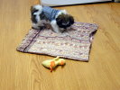

2/29 (Fri)
-
[phys]nanoプロジェクト
-
雑感。どうも最近はそういう時期みたいで、
Phys.Fluids も５０周年らしいね。
- というのは、Phys.Rev.Lett.
もちょうど同じってこと
(1/17/2008)。
ちなみに JFM はしばらく前だった
(4/26/2006)。
- それで、物好きなので
vol.20, issue 1
のエッセーの類も読んだりしたのだけど（先月のこと）、
一つだけ残念なことがあった。それは "Brief Communications"
の廃止。最近追加された "Letters" セクションは
（PRLと一緒で）今の分野の注目に fit したネタの速報という意味合いが強い（と、実際
当時の編集長
もおっしゃっておられた）。
個人的には "Brief Communications" は、
読者としては「何が出てくるか」と楽しみだし、
書く方としては、今皆が向いている方向ではなくて full paper にする程ではないけどけ、
きちんと論文にしておきたいときの最良の場所だった。
実際、私の例の
（最も嗜好性の強い）
論文
(cf.papers)
は "Brief Communications" だった。
（つまり、結局一回しか使ってない訳だが……。）
時代の流れなんだろう。そうすると、こういう需要に関しては、
今こそ preprint server が受け皿になるのかな。
最近はきちんと引用も載せてくれているみたいだし。
この場合の問題はむしろ、書き手の「完成させる」ことに対する motivation だな、きっと。
（anonymous referee 制度の功罪の「功」だ。）
自由は（気を抜くと）堕落に繋がる。
- 記念と言えば、ここ UofA は今年でちょうど
１００周年なんだそうだ。
- 3/6/2008:
何で「米国物理学会レター誌」？
- 3/19/2008:
恩師からメール、仕事は減らないらしい。
2/28 (Thu)
-
[phys]nanoプロジェクト
- EOF:
Saintillan et al (2006) を、少し腰を据えて読む。
- （じゃあ、先日は何をしてたんだと言うと、
「目を通した」＝「眺めた」だけ。）
- ふむふむ、やっと具体的に何をどうしているのか分かってきた。
これでも十分複雑だけど、既に随分いろいろと近似が入っているな。
- この論文に関しては底を打ったので、よしとする。
ノートにまとめておく。
-
[phys]セミナー：横川さん。
- その道の専門家（ここのグループの半分くらい？）には
歯ごたえのある話だったんだろう。ど素人の私にはチンプンカンプンだったけど。
- 内容じゃなくて発表のスタイルに関して、１素人 audience の目に映ったこと：
彼の研究者的な誠実さが全面に出てしまって、
自分の良さをアピールするという側面がちょっと弱かったのではないかな、と。
つまり、質問に対して、まず答えを one sentense で言い切っておいて、
それから好きなだけ補足すると言う、プレゼンの基本的なこと。
とか言っている私も、昔 andrea に怒られたなあ……
(11/25/2002)。
つい、何でダメなのかとか、ダメになる状況とか、
そういうこと（だけ）を口走ってしまうような所。
個人的には、しかしそういう（一見、頼りなく映る）点をこそ評価するけれど。
えっと、自分がそうだから、ということではなくて。多分、こう思ってるから
結果的に自分もそうなのかもしれないけれど（順序が大事）。
ハッタリで生きてるタイプの人は、逆に信用しない傾向がある。
まあ個人的な好き嫌いに過ぎないけど。
- 1/9/2008:
日本からの visitor.
- 3/21/2008: エチオピア料理。
2/27 (Wed)
-
[phys]nanoプロジェクト
- EOF:
Saville et al (2000) J.Chem.Phys. に目を通す。
- また別の世界の話だ……。
electro-optic response of polyelectrolyte solutions の話なんだそうだが、
"electro-optic"って何じゃ？
- ってことで急に、磁場との coupling とか、
photonics (optics?) と fluidics の coupling とか、（やけくそ気味に）検索に走る。
一体いつ地上に帰還できるんだろうか？
- web を見てたら、オランダでの知り合いが何とシンガポールにポジションをゲットしたらしい。
- さっそくメールを書いておく。
ヨーロッパには落ち着けなかった、ということなのかな（彼はドイツ人）。
- そういえば、ここ数年、シンガポールからの科学系の公募が結構目についていたようにも思う。
一つくらいは出したことあったかもしれない（が、何の反応もなかった）。
中国も APS とかに公募が出てるけど、中国人の友人曰く、アメリカとかでポジションを持ってる
くらいの人でないと取らない（それくらい競争率が高い）のだそうだ。
- 付記：返事が来た。聞けば色々とあったそうだが、
それを「波乱万丈」とか言い切ってしまうのは止めておく
（我々が我々のことをそう言われると「何も分かってないくせに」と頭にくると思うので）。
彼曰く「シンガポールには（その手の）職は（今は？）沢山あるので、
その気があれば俺に言ってくれ」とのこと。そう言ってくれることがありがたい。
今はまだまだ引越しアレルギー中なので、考えてないけど。
-
夜、ふと思い立ってダンボールの中に入っていた家で一番重たい本を引っ張り出して来る。
- その本とは
Lars Onsager の論文集。
これは（前にも書いたかもしれないけど）98年の春先だったかな、
tucsonに訪ねた gregory eyink
（彼は今は JHU に居る）の影響で、
その後手に入れた本。
その当時の私の関心は主に非平衡系の話だった。
もちろん greg の関心はもっと広くて深くて
（特に初期の仕事はほとんど純粋に onsager に触発されたものなんだと、
訪ねたときに思ったくらい）、最近も彼の書いた
onsager と乱流に関する広範な論文
を目にして（中身は読めていないけど）、妙に納得した。
- 今回の私の関心は、 "electrolyte",
onsager と debye の逸話のネタであり、
彼が最晩年に再び戻ってきたネタ
（例の hubbard-onsager）であり、
その本でも誰だかが「onsager の初恋」と言っていた、
その subject に興味があったので。しかし（というか案の定というか）、
物理よりも（つまり onsager の論文よりも） commentary に書かれた彼の人物像や
背景の記述の方にばかり目が行ってしまった。
ある評者の文章に「一般に広まっている論文の粗製濫造という悪癖を
onsager はその行動によって否定した」、
（つまり論文はあまり書かなかった（細心に吟味して書いていた）という意味）
ような記述があった。それでも（しかも全集ではない状態でも）電話帳以上の本になるわけで、
まあ圧倒的に違う世界のお話だけど。
2/26 (Tue)
-
[phys]nanoプロジェクト
- EOF:
- 古いものを中心に（厳選して）文献を（まだまだ）印刷。
- 昔の（pre-TeX age の）学術本、例えば springer の lecture notes の類に
タイプライターで整版された「本」があったりする
（今日出会ったのは成書ではなくて、
"Advances in Colloid and Interface Science"
の古い（1980年の）論文）。
そういうのが、（特に最近）何かいいなぁと思ったりする。
その理由の一つに、最近の本の作り
（組版というのか？フォントのスタイルとか、数式の組み方とか）に
全然魅力を感じなくなったことがあるのだと思う。
TeX の computer modern とか Word で書いた（？）数式とか、
それをただ印刷しだだけというような奴のこと。手を抜いていると感じる。
まあ技術というものが、そもそも手を抜くために作られている訳なので、仕方ないのか？
-
[TV] Nova で microraptor という古代の生物の飛行についての
ドキュメンタリーをやっていた。
- テレビを（途中から）見てたときは始祖鳥のことだと思ってたけど、
調べてみると、どうも別ものだったらしい：
始祖鳥、ミクロラプトル@wikipedia。
ちなみにテレビではもちろん「マイクロ・ラプター」と言っていた。
- テレビでは風洞実験で、足の羽は尾の上に三角に載せると一番揚力が稼げると言ってた。
あのシーンは、リアル・タイムで撮ってたのかな？
- 付記：PBCのサイト
にオンライン版が置いてある。
-
書類書き。
- なぜかここ数日間、家では二人して英作文に「ヒーヒー」言っていて、
モンちゃんは「何で遊んでくれないの！」とご不満。
かおの方は昨夜峠を越えて、今日無事に完了し、モンちゃんもほっとした様子。
私の方（例の寝かしていたブツのこと）は、結局
今日の深夜までかかって、完成。即、発送も完了して、やっと心置きなく眠れる。
- 話は変わって、日本の公募のこと（一般論）。
普通、紙で提出させるシキタリだけど、何とかならんものかな。
所詮、こいつの bottom line って、あちら側の都合、つまり責任回避だよな、
「出したのにどうなってるんだ」というクレーマーを避けるための
（バカの一つ覚えみたいな簡易書留で送れとかってもの、そう）。
外の世界では、結構メールとか web で online とか普通なのになぁ
（とか言ったら、舶来崇拝な人たちがコロっといかないかなと思ったり）。
- 付記(2/27/2008)：
web
の情報も多少 update しておいた。
2/25 (Mon)
-
[phys]nanoプロジェクト
-
雑感。先日来いろいろと文献に当たっているが、
"Journal of Colloid and Interface Science"
という雑誌は実は結構すごい。
- 今現在はどうなのか分からないが、少なくとも８０年代は、
今調べている辺りの内容はほとんどこの雑誌に網羅されている。
これまで JFM
よりも格下かなというような印象が漠然とあったが、それは多分、
自分の中で pure な -- つまり電気が関わらない neutral な -- 系だけに
filter して来たせいだろう。しかし、実は単に明確に住み分けられていただけで、
雑誌の格的には JFM と同じで、その世界のトップなんだと。
多分、分野の専門誌という意味では、ほとんど唯一だから、これも必然なのかもしれないが。
- 「過去の賢人、侮りがたし」と当たり前のことを日々思っている。
最近の論文で「ガツン」と来るのは（こちらの感受性の問題も多分にあるんだけど
cf. 6/7/2007）
なかなか無い（けど、時々はある）。
これは、論文の粗製濫造ゆえの S/N 比の低下なのか、やっぱり人類の知的能力の低下なのか
（「人類の知的能力」と「計算機の能力」は、もちろん別物）。
- 付記：一つだけ、この雑誌（および同じことをしているもの）に文句を言いたいのは、
式番号を [1] とかぎ括弧（と言うの？英語では、
wikipedia 様によると、
square or box brackets）で囲んで、文献番号を (2) と書くところ
（こっちは英語では parentheses）。
習慣というか文化というか、そういうものだと思うけど
（それ故に、無下に「こうしろ」とは言えないものがあるのだけど）、
全く逆の世界に慣れた目には、この違いはかなりイライラする。
- 3/19/2008:
学術論文に対する個人的な懐古趣味。
- 3/28/2008:
UofA から JCIS が全部読める！
-
colloidal dynamicsという会社。
- その道で有名なオーストラリアの O'Brien さんが 1986 年に起こした会社らしい。
出来る人は、のほほんとアカデミズムに身を浸して時を過ごすことに甘んじない、
ということか？
- 以下は前に聞いた話。
ストークス流で有名な Kim さんは、その当時アカデミックに居場所が見つけられず、
ある企業にコンピュータ系のスペシャリストとして入って、９時ー５時はサラリーマン、
それ以外の時間は純粋に自分の知的興味に使うという生活を長らくしていたらしい。
そういう期間を経て最近（？）最終的に大学に居場所を見つけられたんだそうだ。
- 身の回りに（今時の言葉で言うところの）ロール・モデル (by mochio) が居ない我々
(cf.8/2/2002)
にとっての、いわゆる一つ（今日は２つか）のロール・モデルとして。
（サマリー：人生の主導権）
2/24 (Sun)
2/23 (Sat)
-
今日はいくつか溜まっている案件を進めるぞ、と（二人で）気合を入れる。
- 夜、「よし今日はやったぞ」と思ったが、よく考えると、
実際に処理が済んだものはほとんどなく、今後のプランや手配に終始しただけみたい……。
- 別の書類も仕上げるぞ、と思っていたのだが、
プラン（こっちは内容）を書き下ろさなくてはいけないようだ。
ちょっと寝かせて考えよう。
- またもう一つ、長いこと気になっていたが手が回ってなかった
個人的なメールの返事を書いた。
ついでにアメリカに行った知り合い
にも近況報告のメールを出した。
すると、直ぐに返事がきた。曰く、土曜（今日）も出勤でボスとミーティング、
明日もミーティングだ、とのこと。元気そうでなによりだ。
仕事は忙しくて大変そうだが、パサデナは純粋にうらやましい。
- ちなみに、確実に終了したものは、モンちゃんの登録、
airmilesと
ING DIRECT の住所変更、くらいかな。
-
[phys]nanoプロジェクト
- EOF: Kang, Sangani (1994) に目を通す。
- 流体屋が、その当時の状況をまとめた論文的な感じかな。
EP と EO を mobility と resistance と把握しているところは、
そういうものかと思った。
- 基本は O'Brien (1983, 1986) で、流体の多体効果を正しく取り込み
（その影響は minor だったけど）、結果は表にまとめた、という話。
- 2/24/2008: 後始末。
2/22 (Fri)
-
[phys]nanoプロジェクト
-
[blog]
「Report 21世紀の空海密教を語る」@seigowchannel(lc)
- 本題も読んだけど、今は取り合えず以下の部分だけ引用：
けれども、今、実力も人気もある作家たち、たとえば江国香織や川上弘美を見ても、
愛を語るのにセックスを必要としていないのです。
いや、俺には感受性がないのだなと思ったということ(2/10/2008)。それだけ。
- 6/5/2008: 藤谷さんの日記
- [blog]
「2008.2.6: 感想文もやめます」@chiaki(lc)
- ご当人のことは存じ上げないし、この日記も日本に戻られた辺りからかな、
ほとんど見なくなったけど、今日たまたま見に行ったら、以下のごとく：
ドイツからの帰国を機に日記をやめた後も、「いろいろ感想文」と題して、
はじめは映画など自分の見たものの感想文を、次第に日々の出来事についても、
簡潔に書いていた。
…
今日、心優しき友人から、私よりも身分の高い人が、
さらに身分の高い人に「彼女はあんなにテレビドラマを見ていては仕事ができるわけない」
とひどく評していたときき、その感想文も閉じた。
…
しかし、現実に、私の就職に影響しかねないという事態に至り、すべての言葉を閉じる。
この、問題の「私よりも身分の高い人」ってのは、
楽しそうに見える他人が気に入らない、不幸な人なんだろうけど、
こういうのって困ったもんだよな（本人の不幸を他人に八つ当たりされても困る、の意）。
日本という所は、何か圧倒的に生きにくい所だなと思った。
それとも「日本」というのは間違いで、「大学関係者」という閉じた世界だけの話なんだろうか、
あるいはもっと限定的な、そっちの業界だけの話なんだろうか、
それとも「その」アホなおっさん（か、おばさんかは知らないが）だけの話なんだろうか？
そんな人の居る世界に、しかしやっぱり入りたいのだな
（皆が悪い訳ではないのだろうから、別に妥当な希望なんだろうとは思うが）。
というようなことを、全くノイズの無い異国の地で、のほほんと暮らしている人間は、
思った。
- というか、ちょっとこの「馬鹿野郎！」に加勢をしたくなった。
何しろ（この日記を見れば分かるように）私は、テレビは見てるし（今週の american idol は
男１２人の回は途中からだったけど見たし）、本も読んでるし、
モンちゃんともきちんと遊んでるし、
趣味的な coding もしているし、ギターの練習はそう言えば今年に入ってまだしてないけど、
睡眠は十分に取ってるし、土日はきちんと休んでる人間なので。
件の人は、 google の 20% rule （もっとパーセンテージ低かったっけ？）
とか取り入れてみようなんて夢にも思わない人間なんだろうね。
（何か、話がずれてきた、かな？）
2/21 (Thu)
-
[phys]nanoプロジェクト
- [news]
「ダン池田さん死去していた…“夜ヒット”や紅白で伴奏務める」@yahoo(lc)
-
[blog]
「レノボX300 封筒に入る超薄型ThinkPad」@engadget(lc)
- matz(lc)から。
- macbook air は、見た目はかっこいいなと思った（iPod もそう思った）けど、
何だろう、バッテリーの扱いがやっぱり apple のことを好きになれないポイントだな。
(cf.2/1/2007,
9/26/2005)
- 考えたらもうずいぶん長い間 ThinkPad だし(これまでの computers)、いいなと思うけど、
貧乏人のチョイスは R series で決まりだからな……。
-
[読書]宮部みゆき
- えっと、宮部みゆきの在庫処分（かおが借りてきてくれたものの中から、の意）ということで、
その後は「ドリームバスター」なるものに進む。
うーむ、別に無理して SF 書く必要もないと思うのだが。
というよりも、最後まで行っても話が終わってなかったことがショック……。
続きは果たして図書館にあるんだろうか？
- 付記：何とこのシリーズ、既に４まで出てるとか。そうか、そんなに続ける話なのか。
2/20 (Wed)
-
[coding]
「ついにMS Officeのドキュメントフォーマットが公開」@/.jp(lc)
-
[phys]nanoプロジェクト
- EOF: 昨日の収穫物から、いくつかの論文に目を通す。
- Lyklema (2003) Colloids Surfaces A
"Electrokinetics after Smoluchowski"
- 先日の review が結構読めたので、
別の論文を探して見つけたもの。なかなか面白かった。
というか、全体像とか相互関係とかが見えてくる。
- ion の EP mobility に関する論文（alex からの情報）について、
最近の目ぼしい物に目を通してみる。
- このレベルまで降りてくると（length scale のはなし）、
化学屋の独壇場だな…… mobility も conductance から決めようとしているし。
これでは何か全然分かった気にならない（個人的なテイストの問題なんだろうが）。
- alex の言ってた zwanzig から hubbard-onsager に至る
dielectric friction の話も、多分、普通の状況では
（あるいは first step としては）無視するのが正解なんだろう。
ちなみに、この件に関しては UofA の化学に居る人がよい実験をしたらしい。
- Capillary Electrophoresis に関する成書（online本）にも目を通す。
- しかし、物理についてはほとんど書かれてなかった……
何か ESMS を勉強しはじめた頃に感じた気分を追体験している感じだ。
- Karniadakis-Beskok-Aluru 本の EOF に関連する部分に目を通す。
- 理論とシミュレーションの文献をいくつか印刷に回す。
- 付記：本の URL がないかと google 様にお伺いを立てたら、
上の books.google.com
に行き当たる。これって、全部、読めるんじゃないのかな？
- 本の検索も出来るみたいだったので、ついでに
前に断念した
我々の仕事の引用部分を探してみた。
p.478 にあった。内容的には、
（もちろん、可能性を信じて想像力を膨らませれば、
あながち間違ってはいないと言えなくもないが）
多分 件の論文というよりは、
mina の論文と私の論文の方がより fit しているかな。
- 9/2/2008:
journal citation report と被引用数。
- 本の中央部の陰りとかがあるので、 scan したみたいだが、
全文検索出きるということは OCR かけてるんだな。英文だけならもう十分実用的なのかな？
大学の頃（なので、えっと１５年くらい前ということになるかな）、
友人のボランティア・プロジェクトの手伝いで、
目の見えない人のために本を電子化しようという話に関わったことがあるけれど、
その時の日本語の OCR は使い物にはならなかったな。
- 別の electrokinetics に関する online 本も覗いてみる。
- ほとんどピンと来るものは無かったが、
一つだけ、ある図がとても興味深かったので、それに関連する文献を印刷。
よく見るとこの仕事は、その本の editor 自身の仕事だった。
- Saintillan et al (2006) JFM
に、再度、目を通す。
-
夕食は NINT にいる日本人たちと。
- 顔ぶれは前回の面子
プラス NINT の別のグループにいらっしゃる方ご夫妻。
若者はもうこちらの滞在が半分終わったし、
聞けばそのご夫妻もこの夏で引き上げるのだそうだ。さみしくなる。
- かおが気づいていて、飲みの途中に月食を鑑賞。今日はとても天気がよかった。
- 3/21/2008: エチオピア料理。
- 8/28/2008:
ご夫妻、帰国前の送別会。
2/19 (Tue)
-
[phys]nanoプロジェクト
- ３人で議論：
- 先週の水曜にボスとちょっと話したことの続きみたいなもの
（月刊 report には書いたこと）。
- それから
５月末の会議
に出しましょう、という話。やっぱり締切りがあった方が進むかな（弱いな）。
- alex がくれた、そっち方面の論文を一通り印刷。
何か、鍾乳洞を進んでいて、また別の穴を発見して、何とかしてくれ！という感じ。
- EOF:
Lyklema (2006) Colloid Surfaces A に目を通す。
- review.
物理屋と化学屋がお互いにお互いを無視している状態なので、
そこを打開しましょう、という motivation の論文。
- 2/20/2008: 同じ著者の別の論文も読んでみる。
-
[monton]今日のモントン
- 最後の注射に、朝、病院に連れていく。
病院に入ったらバタバタしはじめて、かおの手の中で少しチビったらしい……
- お昼に引き取る。これで当分（１年）は注射フリー。
避妊手術するなら、６ヵ月以降早い内にということらしいけど、
私はソフトな人間なので、今は「したくないな」と話をしているところ。
- そうそう、ここの病院に行くとモンちゃんは必ず鼻の頭を剃られてくる。
目的は目に入らないようにするためで、最初の頃は毎回、刈ってもよいかと確認されたけど、
ここのところは暗黙の了解化している。
人相が変わって、いつも戸惑う。適度にボサボサが可愛いのに、早く伸びないかな。
- ちなみに今日でモンちゃん満４ヵ月才。
- 3/2/2008:
モンちゃん、バスタオル事件。
- [coding]magicpoint 1.13a がリリースされていた。
- 一年たってるなあ（1.12aが）と思っていたけど。後で試してみよう。
2/18 (Mon)
- family day という休日。
- 未見だが、家の目の前のスケートリンクで
snow day (2000)
という映画が撮影されたんだそうだ。見なくては！
2/17 (Sun)
-
[読書]宮部みゆき
- あれから、また宮部みゆきに戻った
（と言うのも、かおに「今のところ宮部みゆきが一番よかった」と言ったら、
手当たり次第に借りてきてくれたので）。「理由」というすごく分厚い文庫本。
結構、時間がかかったけど読み終わった（長く楽しめた、の意）。
意図的な冗長さで、同じ event でも人によって全く別の意味を持つということを、
これでもかこれでもかと連打した、そういう感じ。
一つの見方でしか物を見ない（見れない）人は、困ったものだと思うけど、
意識しない所で、自分にもそうしている部分があるかもしれない。
- 2/21/2008: 「ドリームバスター」読了。
- 3/2/2008: 東野圭吾「手紙」。
-
[monton]今日のモントン
- 風呂に入れた。今日はゆっくりと入って、ゆっくりと洗った。
その後、バスタオルに包んで、膝の上で乾かしながら寝かすのだが、
都合１時間くらい独占されてしまった。
- 3/2/2008:
２週間ぶりのお風呂、バスタオル事件。
2/16 (Sat)
-
[music]
piano jazz に hiromi uehara が出ていたらしい。
- 2/8/2008 のオンエアーだったようだが、これは再放送で
original は 2/17/2004 収録の 10/26/2004 オンエアーだそうだ：
"From Tokyo to Berklee: Hiromi on Piano Jazz"@npr(lc)。
つまり oscar peterson は健在だった訳だ。
(cf. 12/25/2007)
- 彼女の jazz pianist としてのスタイルは
（というか、その世界で売りにしている部分は）、少なくともその当時は、
モダンでもコンテンポラリーでもなくバップだったんだろうな。
marian に合わせるという意味合いもあったのかもしれないけど、それ以前にやっぱり、
こうガツガツ弾く方向に、という感じ。
art tatum とか、やっぱり oscar peterson とか、その辺りなんだな。
ちょっと私の好みでは無い。
sonicbloom だっけ、ずっと最近か、あれは（１曲だけとか聞く分には）よかった。
- じゃべりのたどたどしさ（もちろん英語が下手とか言っている訳ではない。
誰だって、たくさんのリスナーがいる状況で、自分の身の上を喋ったりするのは、難しい。
録音とかされることのない、ファミリー・パーティでのおしゃべりとは訳が違う、の意味）
が、逆に演奏の fluency を際立たせていた。
jazz pianist としての実力はきちんとある証だな。
- そう言えば、もうすぐ９０になろうという marian のことが、
ちょっと心配になった。
- 12/25/2005:
テレビで上原ひろみの横浜でのコンサートを見る。
-
急にジャンク・フードが食べたくなって、 KFC に行ってくる。
-
[TV]
"HOW TO BE HAPPY"@cbc(lc)
- 夕食を食べようとリビングに座ってたまたま点けたテレビでやっていた。
ほとんど終わりで（ちょうど "laughter yoga" の辺り、
あれ、かなり怪しいよな）、何の番組か全然分からずにそのまま最後まで見た。
見終わって、最初から見たいなと思っていつ再放送するかなと調べたら、
online で見れるようなので見てみた。
- "QUIZ: HOW HAPPY ARE YOU?" の結果は２４点だった(lc)。普通だって。概ね幸せだが、改善したいポイントがいくつかある、と。
- 番組に出ていた martin seligman は何か見覚えがあるなと思ってたら、
彼の本 "Learned Optimism" を持っていた
（ペーパーバックの裏表紙に顔写真が付いていた）。
- 付記：かおに教えてもらったのだけど、
この番組のネタであるところの "positive psychology"
というやつが当の martin seligman のそれそのものらしい。
wikipedia 様
もそのようにおっしゃっておられた：
Martin Seligman, who is considered as "the father of positive psychology" has pointed out ...
おまけに、
Positive Psychology Center
なんてものも、ずばり U Penn にあるし。
- 9/8/2008:
寛容さのない日本人は、きっと不幸なんだ。
2/15 (Fri)
-
何と今日は気温がプラスだ。
- と言っても、実はあんまりうれしくない。
積もった雪がぬかるんで、歩くのは最悪の状態。
(cf.3/17/2007)
-
[phys]nanoプロジェクト
- EOF:
- modified PB eq の論文にいくつか目を通す。
- その他、また論文を印刷。
-
[blog]
「2008-02-15 近藤の帰国、そして、はてな本社の京都移転」@mochio(lc)
- 最近、広報的になってきたので見なくなっていた彼の日記を久しぶりに覗いてみる。
「2008-02-14 京都」@jkondo(lc)
- 関係ないけど、我々も今日ちょっとした決断をした
（また、 synchronicity だな）。
多分、将来振り返ることがあったとき、彼の決断のことも一緒に思い出すんだろうな。
「アメリカに行く」というニュースを見たのは、いつのことだったかな？
そう言えばその時、妙に親近感を持ったような気がする。
- 12/3/2008: また別の決断。
-
[coding]mgp2odp
- 勢いで、とりあえず text 関係の基本的なコマンド処理は実装した。つまり、
- %cont : 行継続
- %fore : 文字の色
- %font : 標準の３種類のみ
（thick を bold に、 typewriter を italic にしている）
- %center, %left, %right : 位置決め
これで最低限、コンバーターですと言ってもいいレベルになったかな。
下らないバグが version 1.3 登録後に見つかったので
1.4 になった
（ローカルで RCS してるだけなので、別に直せるのだけど、それも面倒ということで）。
デモ・ページを改訂したので、興味ある人はそっちを見てみてください。
- 自分のプレゼンで使っていて、まだ実装していないコマンドに %area があるけど、
これは画像の位置決めと同じで、場所をきちんとフォローしていかないといけないので面倒だ。
フォントのサイズ（%size）も残ってるな。
- そろそろ、飽きてきたかな。コードも順調にマカロニ・スパゲッティ化してきたし。
- 歴史：
- 2/20/2008: MS がフォーマット公開。
2/14 (Thu)
-
edmonton で指紋を取るには、 headquater に行く。
- その中の police information service だったっけな、そこで出来る。
for some local tip （と言っても、さて誰のためになるのかね？）
- 今回は行ったり来たりするのは嫌だったので、事前に警察に電話で確認したのだが
（HQ に行けと言われた）、行ってみると「FBI の form は持ってきたか」と聞かれ、
「前に london に行ったときは手ぶらで OK だったんだけど」と言って、
緑のフォームかと聞くと、それはカナダの奴なんだって。
なので、一旦家に戻って、 internet から download して印刷して記入して出直し。
結局これで丸一日潰してしまった（が、終わったのでよかった）。
前に異常に時間がかかったのは、実はこのためだったのかな（form のせい）？
- 11/20/2006:
london, ON の場合。
- 3/4/2008:
calgary に出かける。
- 3/7/2008:
FBI より私の分のみ届く。
- 3/10/2008:
FBI よりかおの分も来た。
- 3/31/2008:
オランダへの手配、完了。
- ……
- 5/30/2008:
３ヵ月たってしまうので、取り直し。
-
[monton]今日のモントン
- 先日教えてもらったように耳掃除
（というか、これは耳の消毒だな）。モンちゃんはいい子にしていた。
終わってしばらくは頭を振ってたけど。
あと、その液体のために、耳のまわりの毛がガビガビになってた。
でも、それから「モンちゃん臭い」度が減ったと、かおは言っている。
2/13 (Wed)
- [news]
「京大、湯川博士の直筆論文を初公開 「雰囲気ひしひしと伝わる」」@yahoo(lc)
-
京都大学OCWの
湯川先生のノーベル賞論文の手書き原稿と印刷版から見ることができる。
- で、久しぶりに京大のトップ・ページ
を見たが、ちょっと斬新。あえて横長にしてるんだな。最初、気が付かなかった。
だけど、あのオレンジ色の吹き出しは必要かな？（まあ、その格好悪さを見て少し和んだけど。）
しかし、目的の場所（OCW）にたどり着くのに結構苦労した。
これは、本当のトップ・ページの機能的なデザインがよくないというこのなのだろう
（１ユーザの声）。
- 何かすべて京大の手柄のような広報の仕方だけど、
件の原稿を見たら Osaka Imperial University のレポート用紙で、かつ、
論文の affilication も Osaka Imperial University. ふうん、
本当にがめついのは大阪人じゃなて京都人なのかなとか、そんなことを考えていたら、
Yukawa Institute が日本語では「基礎物理学研究所」となっているのも
何でだろうな（どういう意図なんだろうな）ってなことも、ふと、思った。で、
wikipedia 様にお伺いを立てたら、
歴史的な変遷はそういうことなのだそうな。
ってことは、1990年に何で英名だけを変えたのか
（そっちにだけ "Yukawa" の名前を付けたのか）、ということか。
-
[phys]nanoプロジェクト
- EOF:
Kim, Darve (2006) PRE に目を通す。
- この論文の本題は（また）置いておいて、概観をフォローしておく。
- ふむ、 surface roughness は macroscale では本質的ではない、とな。
- EOF 一般の話、特に continuum theory と molecular dynamics の関係
についてのまとめを読んで、ふむふむ。
- で、また、ここから色々文献を更に収集。
いくつかに目を通す。
この辺りの現象としては、 charge inversion が面白いのらしい。
- tex note (tex/note/20080130-eof/eof.tex) にまとめ。
2/12 (Tue)
-
[phys]twobody
- ストークス流の２体の厳密解の正誤表：
- 週末にようやく正誤表だけでもと公開した。
その時に昔の記述
(3/24/2007)
を見付けたのだけど、それがその正誤表に反映されてないことが発覚。
よい機会なので、きちんと更新しておこう、という話。
- その時まとめたノート (WORK/tex/book/newbook/lub.tex)
にはポイントは書いてあったけど、正誤表のレベル、
つまり論文の式で言うと何がどうなるべきなのか、という形式にまとめてなかった。
（実装は、ノートの形式で組んであった。）
なので（ほとんど自明な）式変形をして、状況を固定しておく。で、正誤表に追加。
この過程で式 (JO-6.13) にもう一つの typo が見つかった。
- と、こういうことではなくて、
論文を書かなければ！！
- 3/11/2008:
remind (again...)
2/11 (Mon)
- 今日はまたべらぼうに暖かい。
- 道に立ってる電光掲示板の温度表示によるとー３度（摂氏）。
週末はー２０度近かったことを考えると、すごい。
道が逆にぬかるんで走りにくい（むしろ、よくスリップする）。
-
[phys]お勉強
- Kudrolli et al (2008) PRL
"Swarming and Swirling in Self-Propelled Polar Granular Rods"
- APS journals の top page から。
- 軽く目を通してみる。ふむ、 self-propelled granular rods って
なんだろうと思ってたが、密度に偏りをつけて振動させると重い方が底に付いて、
軽い方に向かって進むんだそうな。 movie も見たが、確かに生物みたいに見える。
最近の physics today
の表紙にもなってたけど
（付記：2007年１０月号）、
個人的には佐賀の山で実際に見て圧倒されたカラス（？）を思い出す。
- 付記：科学的な話ではなくて国語（じゃなくて英語か？）の問題、
この状況を self-propelled と言っていいものなのかな、と思った。
いや、ただそれだけ。
-
[phys]nanoプロジェクト
- EOF
- Alex が立ち寄り、少し話をする。で、一本、関連する（古い）論文を教えてもらう。
- この論文が如何ほどのものか分からないので、
引用している最近の文献もいくつか印刷。
- Yariv (2006) Phys.Fluids
"Force-free electrophoresis?"
に目を通す。
- 古典的な electrophoresis が（最近）いろいろと攻略されているんだな。
- cf. 2/6/2008: ICEO
- 3/11/2008:
Yariv (2005), Yariv-Miloh (2008).
- 私が今やろうとしているのはそんなファッショナブルな話ではなくて、
普通の穏当な状況を「正確」に、ということ。まあ、そういう性格なんだろう。
これを「灰泥」と言う（と、勝手に定義しておこう）。
-
[monton]今日のモントン
- 予定通り、注射に連れていく。
すぐに連れて帰れないか聞いてみるが、やっぱり１時間くらいは様子を見たい、
とのことでお昼前にピックアップ。
途中、携帯に電話が入り、耳が悪いかもしれないのでチェックしたいが、と確認。
確かに、モンのタレ耳はちょっと匂ったし、ここのところかゆいみたいだった。
- で、ピックアップに行くと、またバタバタしていた。
病院の人たち曰く、モンは抱っこするとしっこする、と。
（それを聞いて、じゃあこれからモンのこと「ピーピー・モンちゃん」と呼ぼうと。）
家では全然そんなことないので、多分、また何か怖いことされるとびびってするのだろう。
「恐れ」は、まあ頭のよい証拠でもあるのだろう、と思ったり。
で、消毒剤をもらって、耳掃除の仕方を教えてもらう。
- さて、注射はあと１回で一段落（あとは年１回のペース）。もう一息だ。
- そうそう、ここのところモンちゃんは食欲不振だったのだけど、
昨夜、原因が判明した。あるメーカーの缶フードが嫌いみたい。
もう結構大きくなってきたし、試しにドライのドッグ・フードをそのままやってみたら、
空腹だったせいもあるのか、ガツガツとあっという間に食べきった。
- 3/2/2008:
モンちゃん、バスタオル事件。
2/10 (Sun)
-
[SF][phys]
RYUON-twobody
-
[blog]はてなのカテゴリーについて。
- 一旦生成され、その後の編集などで結局エントリーのなくなったカテゴリーは、
自動的に消去されないのかな？古い日記をボチボチと import していて
（一度にやってもいいけど、
はてダラ
での upload に結構時間を食うので）、
カテゴリーが煩雑になったので整理したのだけど、
それら空のカテゴリー群が一覧にずっと残ってる。
- カテゴリー名のハイフン使用不可も何とかしてほしいなあ。
(cf.1/2/2008)
-
[読書]森博嗣
- その後、森博嗣の「ＺＯＫＵ」に進む。
が、空回りと言うか何というか、個人的にはよく分からなかった。
- ちなみに、「聖なる予言」も「号泣する準備はできていた」も最後まで読み終わった。
前者はストーリー・テリングの問題なのか翻訳の問題なのか分からないが、
スムーズさがなかったかな（久しぶりに読書というものをしたせいか？）
後者は、趣味の問題だろうが、ピンと来なかった……というか、正直なところ
自分の旅行者嫌い感覚
が刺激された。私向きではなかったのだろう。
と言うことで、今回の読書シリーズの個人的なベストは依然、
宮部みゆき。
- 2/17/2008: 宮部みゆき「理由」、読了。
- 2/22/2008: 「今、実力も人気もある作家」
-
[monton]今日のモントン
- 明日、また注射の予定。
結局、今日、風呂に入れてやることが出来なかった。
あと２週間、臭い子街道まっしぐらだな……。
- しばらく絨毯の端を噛んで糸を引っ張ってほどくという悪い癖を発揮していたが、
ここのところかなり知能も進んだようで、（誰かさんみたいに「犬」にならなくても）
人間のままで「ダメ」というメッセージが届くようになったみたいで、
最近はほとんどやらなくなった。
- 夜、トイレが終わった頃を見計らって、リビングを開放してみた。
そしたら大喜びで、ダイニング（モンちゃんの居場所）との間を全力疾走で
３往復くらいしていた。絨毯だと滑らないので、コーナーも鋭角に曲がって！
１０分くらいで終了したが、肉体的にも疲れたのか、
ふと見ると台所の板の間にベタッと這いつくばっていた。
2/9 (Sat)
-
[coding]mgp2odp
- perl で画像サイズの取得するには、
外部コマンド（ImageMagick とか）を使う方法や、
PerlMagick みたいなのを使うという手もあるけど、
Image::Size
が一番簡単みたい。
- 画像を import できるようにして、
version 1.2 とした。
- 前に書いたような仕様にして
（つまり手を抜きまくって）、ただベタッと右半分に並べただけ。
一応、画像のサイズを取得する手間はかけたけど、どうスケールするべきかよく分かってない。
あと必然的に画像がありすぎると下に行き過ぎて手が出せなくなるものも出てくるが、
今のところそのまま。
- 普通の画像はもちろん、
eps もきちんと取り込めるので、自分が使ってるように
数式を latex -> dvips で EPS にしてる presentation でも動作する。
デモ・ページを作った。
- OODoc
の正しい使い方とは思ってないが、とりあえず動くというだけの泥縄コード。
createImageElement() だと draw:frame が付かないので、
appendElement() でチマチマと。あと default の graphic 用の style に
なぜか
style:protect="size"
が定義されるせいで、
Impress
でグリグリしようと思っても出来ない。（これを見つけるのに結構時間を食った。）
今は強制的に gr1 という style のそれを削除している。
- 2/15/2008: version 1.4 - そろそろ終了かな。
-
[monton]今日のモントン
- 今日の写真、敷物の上で遊び中、その６ - 破壊工作中。

(2008/1/12)
- 7/27/2008:
モンちゃんの写真、過去指向で再開。
2/8 (Fri)
-
[phys]nanoプロジェクト
- EOF:
- 溜まった entropy を下げる試み（つまりは、論文を束に分ける）。
- いくつか更に新しい論文を。
- [coding]mgp2odp
- 数式は eps にしているので、こいつをどう入れるのか、という問題。
- Impress で eps を import して odp を unzip してみると、
普通の画像（pngとか）と同じように単に eps を与えているだけだった。
- eps のサイズは BoundingBox にある。
- ghostscript に bbox という device がある。
"13.2 Bounding box output"@http://pages.cs.wisc.edu/~ghost/(lc)
-
[monton]今日のモントン
- 今日の写真、敷物の上で遊び中、その５ - ちょっと休憩。
(2008/1/12)
2/7 (Thu)
-
[phys]nanoプロジェクト
- EOF:
online book "Electrokinetic and Colloid Transport Phenomena"
(Masliyah-Bhattacharjee) に目を通す。
- 昨日の勉強以上のものは習得できなかった、かな。
- 数値解法について比較的書いてあるので、ちょっと期待……
ってのはまだ読んでないから……
ってのは、まだ印刷できてないから。
- ここの online book のアクセスは、かなり frustrated だ。
印刷（download）はページ毎だし、
時間制限があるのか知らないが、ある程度見たら access が deny されるし。
ページ毎ってのは、仕方ないので pdfmerge して印刷してるけど……
本をコピー機でコピーすることから後退すらしてないか？
（学生の頃は、ガランとした薄暗い図書館の片隅にあったコピー機の前で
一人チビチビコピーしてたな。ふと目に入った次のページにあった関係ない論文も
ついでに印刷したりしながら。）
- 性懲りもなく、また色々と（基礎的な）文献を印刷。
底を打ったという認識は、
間違いだったかな？あるいは、今は底を歩いて探索している所か。
-
[monton]今日のモントン
- 今日の写真、敷物の上で遊び中、その４
- "what are you looking at" と凄み中。
(2008/1/12)
2/6 (Wed)
-
[phys]nanoプロジェクト
- EOF:
Squires-Bazant (2004) JFM を腰を据えて読む。
- 読みと理解が遅いタイプなので、どの論文をターゲットにするかが結構、鍵だ。
- この論文のポイントは２次流の効果だけど、
よい論文なので、きちんと古典についてもきれいなまとめがある。
（そういう論文がいい論文だと思うし、そういう論文は普通そんなに簡単には書けない
……はずなんだが、彼は何かすごいな。）
- ノートにまとめ（ほとんど書き写し）。
- そこから、また文献を拾ってくる。
- 2/7/2008: 成書に目を通す。
- 2/10/2008: Yariv (2006)
- 3/5/2008:
Ristenpart et al (2007) - EHD.
- 3/11/2008:
Yariv (2005), Yariv-Miloh (2008) を読んで。
- 3/28/2008:
繰り返される歴史と突破口。
-
[coding]プレゼン・ツール
-
[monton]今日のモントン
- 今日の写真、敷物の上で遊び中、その３。

(2008/1/12)
2/5 (Tue)
-
ふと、ロンドン（カナダの）の恩人に
メールしてみる。
- しばらく前に
私の論文
を引用している文献に彼のものを見つけたことについて。
- それから（こっちは、見つけたのはもう少し最近のことだったが）、
その当時ちょっと心配していた
残された学生さんのこと
(see also 10/19/2006)。
彼には引越しの時に随分世話になった。
その後、どういういきさつかは知らないが、
その恩人のグループで息災にやっていることを web で見かけた、そのこと。
- すると１０分と経たないうちに返事がきた。
曰く、まさにその論文のプロジェクトを、
今彼と進めているのだそうだ。二人ともいい人間なので
（だから、学生さんの方は何でそんなに余分な苦労をしなければいけないのだろう
と思ったりもするが）、
本当によかった。
- 一方、どうも件の私の元ボスは、ずっと休暇が継続中で、
実はまだ大学に戻ってきていないという状況らしい。
- 付記（2/8/2008）：
学生さんの方からも返事が来た。色々とあったそうだが、
一番のイベントは、彼が伴侶を見付けて既に結婚もしたということだ。
あれから１年しか経ってないのに、あれから１年も経ったということなんだな、としみじみ。
- 10/9/2010:
ちょっと昔を振り返ってみた
- [music]
Brad Mehldau の "West Hartford" を聞いている。
- 99年の Lugano でのジャズフェスのライブからの１曲。
ベースはいつもの Larry Grenadier じゃないのかな？
でもベースの違いなんて、ほとんど分からない人間なので関係ない。
- 実は、 Brad Mehldau の "Places" の中の
trio の演奏が（どの曲も何か似たりよったりだけど）結構好きだ。
ここのところ新しい CD は持ってないな、そう言えば。
-
[phys]nanoプロジェクト
-
[monton]今日のモントン
- 今日の写真、敷物の上で遊び中、その２。
(2008/1/12)
2/4 (Mon)
-
[phys]お勉強
- 先日の束になった review 論文群をさらっと眺める。
- ページをパラパラと繰っただけだけど、
どうも１本を除いて他のものは off topic か、
少なくとも今は手が出せないな。
- 2/5/2008: ここの所のお勉強を nano で引き継ぐ。
-
[読書]新しい文化がまた入荷された！
- かおが今日、ダウンタウンの図書館に寄ったのだそうだ
（そして、無事に延滞金 50c
- 一日送れたので 25c x 2 という計算 - を精算してきたのだそうだ）。そのついで。
- 読書の方は、宮部みゆきを
読み終わった後、江國香織の短編集「号泣する準備はできていた」に進んだ。
まだ全部読んでないけど、何というか、
人間はみんな仲が悪かったり人を信用してなかったり不倫したりというような、
そういう気分になった。
あと「聖なる予言」は
私の方に戻ってきたけど、最近バタバタしていてまだ読み終わってない。
- 2/10/2008: 森博嗣に進む。
- 3/30/2008:
島本理生「リトル・バイ・リトル」。
- 10/1/2000:
テレビ：江國香織がバルデュスに会いに行く。
-
[monton]今日のモントン
- 今日の写真、敷物の上で遊び中、その１。
(2008/1/12)
2/3 (Sun)
-
[coding]OODoc で遊ぶ。
- 前回は PPT をターゲットに、
java で POI を遊んだ。
- 今週末は気分を変えて、 perl で
OODoc を遊んでみる。なので、今回のターゲットは
OOoの
Impress.
- 何か perldoc をざっと読んでもよく分からないし、
例題も極めて限られているので、日曜プログラマーには厳しいなと挫折しかかる。
そういえば「ODF は XML を zip で固めたものに過ぎない」というようなことを読んだので
（cf.「Manipulating OOo Documents with Ruby (James Britt)」@linuxjournal(lc)）、
手元にある odp ファイルを色々と unzip してみて、その構造を眺めてみる。
こうなると、何か直接 XML を書き下す方が早いなとか思いながら、
mgp2odp をでっちあげた。
mgp2kpr.pyの
OOo版、Perl版って感じかな。
（と言っても、別に Perl が python よりも大好きという訳ではない。
むしろ vtk がらみで結構付き合いが長いので
python の方に馴染みがある。）
- 付記その１（2/4/2008）：
「初心者向けの言語」@matz(lc)
を読んで、何だかまさに
「抽象度が低く」「力業でなんとかしてしまう」ような
「初心者、あるいは経験の少ないプログラマ」が書いた
「理解が難しいようなプログラム」だなと思った。
実際、
「機能は手続きベースでフラット」に組んでて、
「データ構造」も気にしてないし、
「モジュール化」もしてない（最低限、関数に切り分けただけ）。
もっと修行しないといかんな。
- 付記その２（2/4/2008）：
ってことで、誰か出来る人がサクッと作ってくれることを期待しつつ、
公開してみる。
- この mgp2odp は今のところ、
magicpoint の TAB による構造を単純に outline に貼り付けただけ。
TAB なしの行も outline の一番上位の item にしていて、
page 以外のコマンドは何も考えていない（フォント関係も、行の継続も）。
一応、何もしないでも日本語は通る模様（mgpは iso-2022-jp で決め打ち）。
- mgp とは独立に、 OODoc で画像を入れることも一応 follow したので、
次はそれだな。（というか、箇条書きのテキストと、画像化された数式と、
画像があれば、プレゼンとして実用上何の問題ないので、ここまで出来たら終わりだな。）
- さて、この mgp から odp への変換について、
Impress 側の基本的な構造（多分 PPT も同じ）についてちょっと悩んでいる。
みんなはスライドを、テンプレートにあるように outline 一発（スピリットとして）
で作ってるのかな？
具体的に言うと、 magicpoint の TAB なし行を、今のmgp2odpの手抜き実装のように
outline の top item として見るのか、それとも subtitle と見るのか、ということ。
私がこれまで magicpoint を使ってきた時の気分は後者なんだけど、
そうすると Impress（やPPT）の構成が小さな outline だらけになる。
それが Impress（やPPT）で普通なのか、そうじゃないのか、という疑問。
（それから、 Impress で title のような、
outline じゃない plain な text-box を body 部に新たに挿入したいときは、
どう操作するのだろう？ insert にそれらしいエントリーがないし。
あと、既にある要素の cut-and-paste はどうすれば出来るのかな？
……思いっきり初心者だ。）
- 文字の装飾は、 span で style を指定するみたい（xml を覗いてみた結果）。
OODoc でこれを作る正しい作法は、どうするんだろう？
（自分で T1 とか T2 とか style を定義するのが正しいのかな？）
- あと、 magicpoint では数式を（自分では）画像にしているのだけど、
odp で text の一部としてそういう画像を入れられるものなのだろうか？
それとも各画像要素に対して一々 draw:frame を準備するのかな？
そうするとスライド中の座標の見積りとかしなければならなくなって面倒だなと思ったり。
安直な落としどころは、必要な画像は適当に並べておいて、
位置決めは全部 Impress を起動して GUI 的に（ちまちまと）行ってもらう、かな……
（手ぇ抜きすぎだな。）
- それから、 OODoc で presentation を作る方法を検索してたら、
以下のサイトを見つけた：
「テキストからOpenOffice.org Impressファイルを作るツール」@emasaka(lc)
- そちらの方が筋が良さそうな coding だな
（つまり、読んでもよく分からなかった）。
- 2/15/2008:
mgp2odp version 1.4 - そろそろ終了かな。
-
[monton]今日のモントン
- 最近、臭い女の子
と言われ続けていたモンちゃん、今日やっとお風呂に入った。
えっと、前回入れたのはいつだったかな？
1/2/2008の後に
一回入れたような気がするが、
注射の前だったかな？
- 今日の写真、ボサボサ顔（プラス舌だし）の図。
一応言っておくが、写真自体ブレてるし、本物はもっとかわいい（親バカ）。
(2008/1/6)
- 延ばし延ばしにしていた書類をやっと書き上げた。
- しかし出来上がった時、結局、朝方になってしまっていた。
明日にでも出しておこう。（間に合うかなぁ……こういうのばっか）
- 付記：現地時間の７日午後４時に配達完了したらしい。
canadapost(lc)
\$52.66 CAD の価値はあった、かな。
2/2 (Sat)
-
ねずみ捕獲。
- 恐怖の夜以来、
夜は先日塞いだ２階のトイレの穴の壁を「コリコリ」する音が聞こえ、
朝になると一階にはあちこち糞をまき散らされ、
ついでに（というかお陰でというか）日々台所は綺麗に保たれていた今日この頃、
とうとう耐えかねて、ねずみ捕獲計画を実施した。木曜に
（モンちゃんの餌を買いに出た
ついでに） mouse trap を購入。
実はいざ自分の立場になって、ねずみを殺すという行為にビビって
（baltimore のアパートで何度か見た、こっちでは結構使われている粘着プレートに
張り付いたまま死んだねずみの事とか思い出して。
ちなみに、これらは自分たちが仕掛けたものではなくて、
どっか上のアホな住人が仕掛けたものを窓から捨てたものだと思われる）、
生け捕りタイプの、大きなゴキブリ・ホイホイみたいなブリキの箱のやつと、
一回り小さめのプラスチックの２つを買って帰った（一つじゃ足りない、
十分に仕掛けて、一発で解決したいという人がいたので）。
その晩、仕掛けて寝て起きてみたら、はずれ。
だけど糞は（少しだが）新たに落ちていたらしく、昨日「足りない」と言われた方は
「昨日あんなに言ったのに、何で私の言うことをきいてくれないの！」とご立腹の様子。
なので昨日、仕事帰りに再び同じ店に寄って、
言いつけ通り粘着の奴を１０枚買って、その晩は粘着を４つ追加して寝た。
そして今日の朝、早起きな人が起きたなと思ったら、下から呼ぶ声が聞こえてきた。
降りてみると、生け捕りのブリキの箱に一匹捕まってた（ちょっと、ほっとした）。
その箱はご丁寧に上蓋が透明なプラスチックになっていて、奴の姿がきちんと見える。
見ようによっては、なかなかかわいいと思ったり、
今年はそう言えば子年だなと思ったり、
今からペットショップに行って檻を買ってこようかと言ったりしてみたが、
やっぱりダメだそうで、
雪深い近くの creek に release してきた
（というのは、明らかに自己欺瞞なんだけど……）。
しかしねぇ、モンちゃんの親として２ヶ月過ごしてきて、
ふと仔犬とねずみの間に明確な線が引けるのかなとか、今回のねずみ騒動が
起こってから
今日まで思ったりしていたんだ
（宮部みゆきの本
の影響だろうか？）。
- さて、家のねずみは果たしてこいつ１匹だけなのだろうか、というのが次の問題だ。
-
[monton]今日のモントン
- さて最近注目の、
果たしてモンちゃんは新しいドッグ・フードが好きなのか、
それとも単なるじゃが好きな女の子
なのかという問題、ついに決着した。
今朝かおが冷蔵庫の茹でたじゃがいもの存在を忘れて、普通にドライと缶を
half and half でやったら、食いつきが悪く、途中で放棄したそうだ。
で思い出して、じゃがを追加してやったら食べたんだそうな。
ということで、モンちゃんはじゃがいもと
にんじんが大好きな、
健康的なワンコだ、ということで決着。
- 今日の写真、服を着せてもらったの図、ロビンフッド風。
(2008/1/2)
2/1 (Fri)
-
[phys]１月の月刊レポートを書き上げる。
- 昨日から書き始めたもの。
結局４時過ぎまでかかったが、とりあえず書き上げたので○。
- back-numbers:
- 2/19/2008: ３者会談。
-
[phys]nanoプロジェクト
- 実験と計算の対比のため、 dsDNA の base pair の長さを調べる。
ある論文の表に、出典は分からないが、 3.4 A とあった。
-
[phys]お勉強
- 今日は別の２本（同じ著者たちの）に絞る。
- それらの introduction から、
review を中心に流れを押さえるのに必要そうな論文を選んで
（おかないと、発散してしまうので）、印刷。
- 2/4/2008: さらっと眺める。
-
[monton]今日のモントン

 2008年2月
2008年2月{kind=link}
{kind=link}
{kind=link}
{kind=link}
{kind=link}
{kind=link}
{kind=link}
{kind=link}